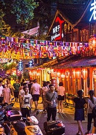

视觉风景
行天地之一方，看万物之残芳。
换一个角度看中国，中国还是那么美。每集一个省，从自然风光介绍到人文地理，画面美丽，讲解恰到好处又不喧宾夺主。航拍的既美且壮丽，江山如此多娇，现在就想出发去探索！
-
遁世高野山
1200年前，日本真言宗创始人空海在此开山建寺，如今作为世界遗产的高野山上密布着117所寺庙和1座佛教大学。这里是日本最大的出家之地...
-
 港口城市
港口城市
当夜幕降下来时，仿佛大自然就化身为一名诗人，将大地蒙上一层神奇的外衣，充满诗情画意；又仿佛一名歌者...
-
巴黎铁塔
当巴黎的夜晚悄悄降临，白日里冷凝肃穆的埃菲尔铁塔就变的分外迷人，晚上的埃菲尔铁塔比白日里多了些亲近的感觉。从蒙帕纳斯大厦观...
-

斯特拉斯堡市场
圣诞市场标志着Advent的开始，斯特拉斯堡市场也是热闹非凡，木制小屋聚集在一起，出售当地的手工艺品，热葡萄酒和节日欢乐...
-
热闹的大街
这里的夜市，虽不具备灯红酒绿的都市生活中那奢华的规模和档次，虽没有城市丽人消费所需的格调品位和浪漫氛围，但却充满着令人喜悦的气息...